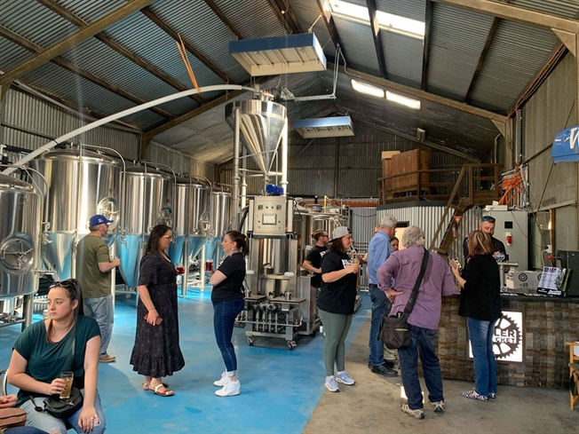

TAPROOM
The Killer Sprocket production brewery is located in Bayswater, Victoria, east of Melbourne.
Open every Saturday from 1pm until 6pm, the tap room provides a small bar, take away sales and brewery tours.
Currently due to the Covid 19 restrictions there is a limit of how many people allowed to drink on premises.
We accept booking at bookings@killersprocket.com.au or you can just turn up and hope for the best.
